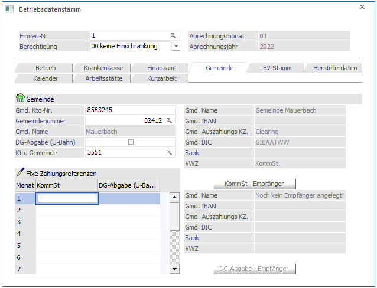

In diesem Register werden die Daten zu Gemeinden verwaltet.

Gmd. Kto-Nr.:
In diesem Feld kann die Kontonummer bei der Gemeinde (quasi Kundenkontonummer) eingegeben werden. Diese Information wird auch bei den entsprechenden Belegen (Gemeindebeleg etc.) mit angedruckt.
Ø Gemeindenr.
In diesem Feld wird die Gemeindenummer eingetragen. Diese Nummer ist für die elektronische Übermittlung der Kommunalsteuererklärung notwendig. Durch Drücken der F9-Taste kann nach allen österreichischen Gemeinden gesucht werden. Wurde eine Gemeindenummer ausgewählt, wird der Name der Gemeinde unter dem Eingabefeld angezeigt.
Ø DG-Abgabe (U-Bahn)
Wird diese Checkbox aktiviert, dann gilt für diese Gemeinde die DG-Abgabe -Pflicht (U-Bahn-Steuer).
Achtung:
Wird hier die Checkbox verändert, dann wird bei allen AN, bei denen diese Gemeinde hinterlegt ist, auch die Checkbox "DG-Abgabe (U-Bahn)" im AN-Stamm mit geändert.
Ø Kto. Gemeinde
Hier kann die Kontonummer eingetragen werden, auf die die Verbindlichkeiten an die Stadtkasse gebucht werden sollen. Durch Drücken der F9-Taste kann nach allen Kreditoren, die in der WinLine FIBU angelegt sind, gesucht werden. Wird hier eine Kontonummer eingetragen, wird für diesen Betrieb auch eine KF-Buchung mit Offenen-Posten-Informationen erzeugt (derzeit noch nicht unterstützt).
Ø Fixe Zahlungsreferenzen
In der Tabelle "Fixe Zahlungsreferenzen" kann sowohl für die Kommunalsteuer als auch für die DG-Abgabe (U-Bahn) für jede Periode eine Zahlungsreferenz hinterlegt werden, wenn diese von der Gemeinde vorgegeben wird. Wird in der Tabelle keine spezifische Zahlungsreferenz hinterlegt, so wird die Zahlungsreferenz aus der Definition des KommSt - bwz. DG-Abgaben - Empfänger gebildet.
Ø KommSt - Empfänger
Durch Anklicken des Buttons Kommst - Empfänger können die Stammdaten bezüglich Adresse und Bankverbindung der Gemeinde hinterlegt werden. Diese Information wird benötigt, wenn die Zahlungen an die Gemeinde im Zuge der Monatsauswertungen aus dem System erstellt werden sollen (Clearingübergabe). Bei den Empfängerdaten sollten zumindest die Informationen Name und Adresse sowie die Bankverbindung (Register Detail) angegeben werden.
Wurde noch kein entsprechender Datensatz angelegt, wird bei Name "Noch kein Empfänger angelegt" angezeigt. Ansonsten wird über dem Button die entsprechende Information des Empfängers angezeigt.
Ø DG-Abgabe - Empfänger
Der Button steht nur dann zur Verfügung, wenn im Gemeindestamm die Option "DG-Abgabe (U-Bahn)" aktiv ist. Durch Anklicken des Buttons " DG-Abgabe - Empfänger " können die Stammdaten bezüglich Adresse und Bankverbindung der Gemeinde hinterlegt werden, an die die Dienstgeberabgaben überwiesen werden sollen. Diese Information wird benötigt, wenn die Zahlungen der DG-Abgabe im Zuge der Monatsauswertungen aus dem System erstellt werden sollen (Clearingübergabe). Bei den Empfängerdaten sollten zumindest die Informationen Name und Adresse sowie die Bankverbindung (Register Detail) angegeben werden. Wird im Feld Verwendungszweck eine max. 12stellige Zahl eingetragen, dann wird das auch als Kundendatenfeld in den Zahlungsrecord mit übernommen.